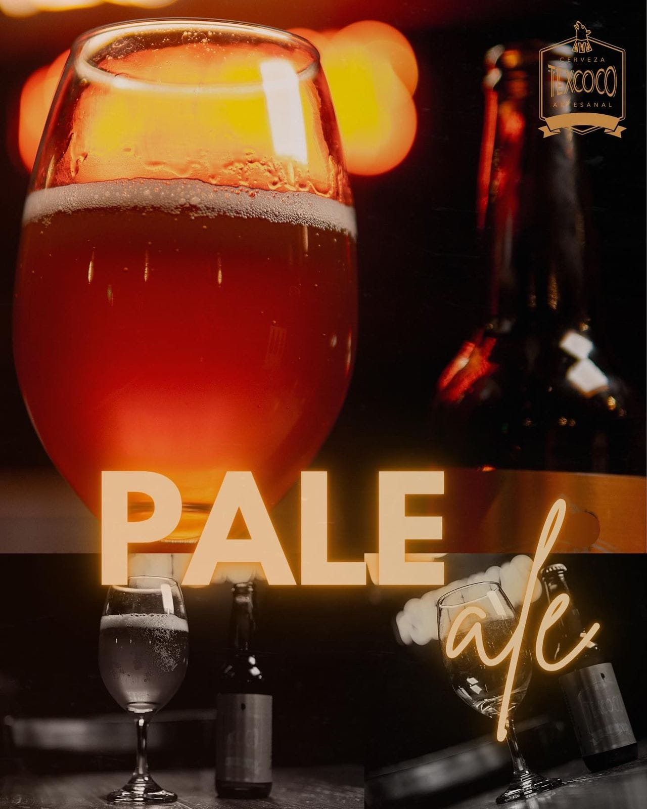
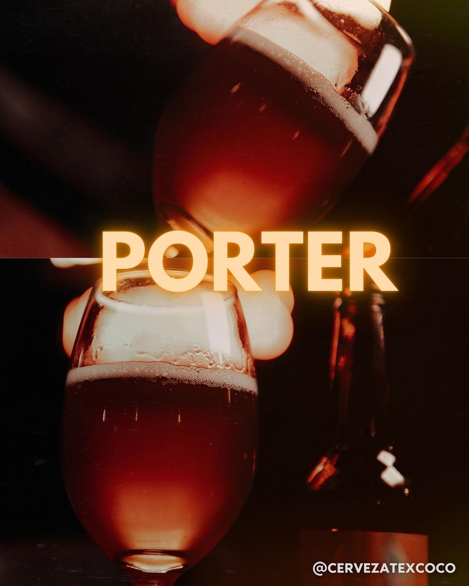
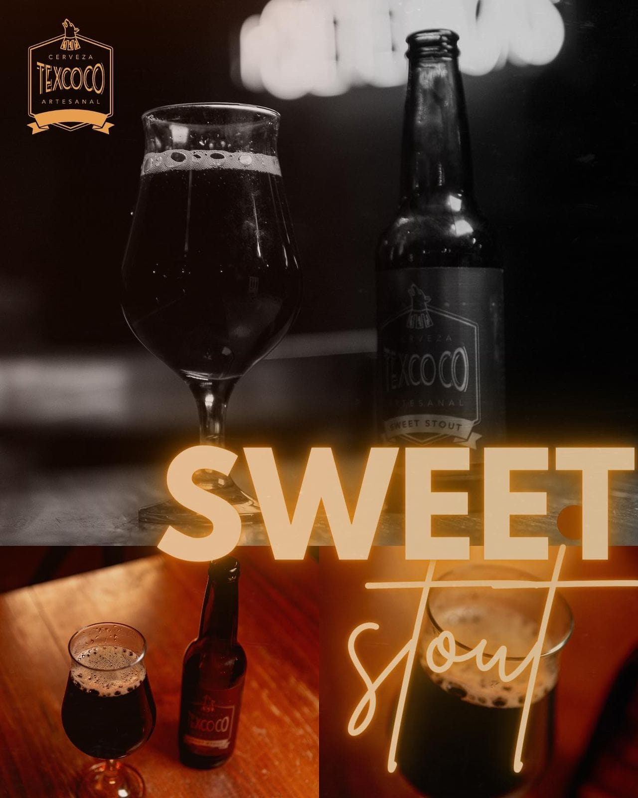

Cerveza Texcoco
Artesanal
Conoce nuestro proceso artesanal
El movimiento de las Artesanales promueve el consumo de cervezas para “saborear”, queremos que te lleves en tu paladar una agradable sencación en combinación con tus alimentos favoritos.
Conoce nuestros estilos

Pale Ale
Cerveza clara que combina el amargor característico de los lúpilos Cascade y Citra, con la frescura de las cervezas Ales.

Porter
Cerveza oscura que guarda un especial balance entre amargor y frescura, ideal para disfrutar con alimentos.

Sweet Stout
Cerveza negra de maltas tostadas que le dan su característico color negro, además de olor y sabor a café.